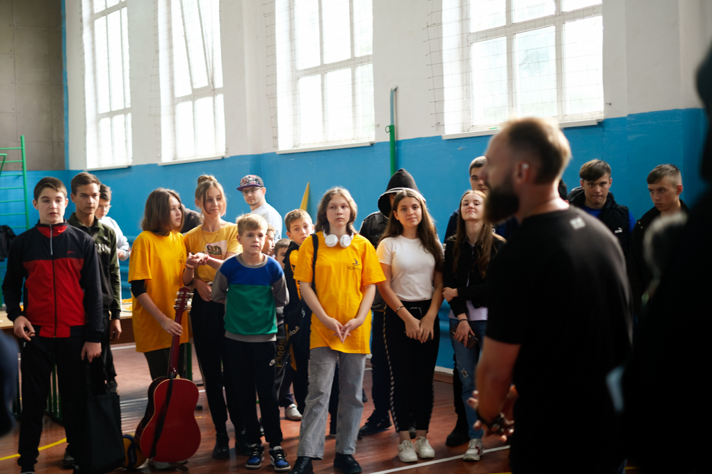
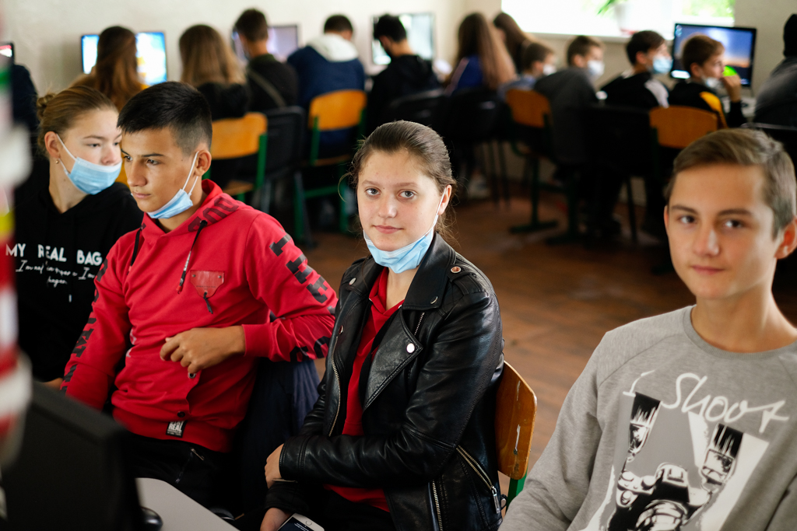
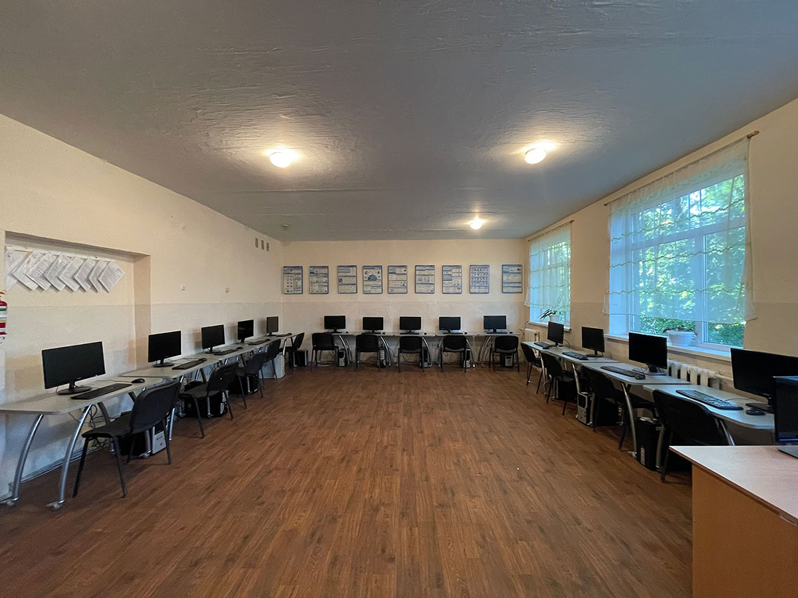

Як ми проводили час?
Як ми проводили час? В першу чергу, розповідали про інформаційні технології і їх напрями! Школярі дізналися про такі професії як тестувальник, системний адміністратор, сайт-менеджер, дизайнер, програміст і веб-розробник.
У один з вечорів ми поспілкувалися з дітьми в неформальній обстановці, грали у футбол та баскетбол, щоб дізнатися їх враження від того, що відбувається. І отримали позитивний і фідбек, що надихає нас і досі!
Дякуємо за теплий прийом!